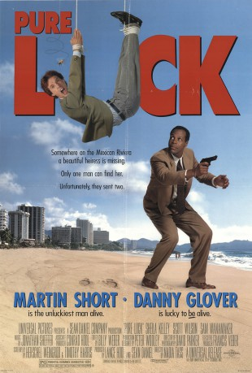

#8624 Reine Glückssache
Alternativ: Pure Luck
 
 IMDB-Wertung: 5.7 / 10
IMDB-Wertung: 5.7 / 10  Metascore: 0
Metascore: 0 
The daughter of a wealthy businessman has disappeared in Mexico, and all the efforts to find her have been unsuccessful. A psychologist, knowing that the girl has an ultra bad luck, persuades her father to send to Mexico one of his employees, an accountant with super bad luck, to find her. Perhaps he will be lucky, and his bad luck could help to find the unlucky girl...
Jahr: 1991
Dauer: 95 Minuten
FSK:
Land: USA Studio: Universal PicturesTonspuren: DD2.0 - ,
Untertitel:
Auflösung: 1080p (1920x1040) Größe: 3624 MB
Genre: Komödie, Krimi, Mystery
Regisseur: Nadia Tass
Drehbuch: Francis Veber
Soundtrack: Jonathan Sheffer
Darsteller:
 Martin Short als Eugene Proctor
Martin Short als Eugene Proctor Danny Glover als Raymond Campanella
Danny Glover als Raymond Campanella Sheila Kelley als Valerie Highsmith
Sheila Kelley als Valerie Highsmith Sam Wanamaker als Highsmith
Sam Wanamaker als Highsmith Scott Wilson als Frank Grimes
Scott Wilson als Frank Grimes Harry Shearer als Monosoff
Harry Shearer als Monosoff Jorge Luke als Pilot
Jorge Luke als Pilot- Patricia Gage als Secretary
 Sergio Calderón als Night Club Bartender
Sergio Calderón als Night Club Bartender- Michael Puttonen als Taxi Driver
- Josefina Echánove als Nun
- Lionel Douglass als Man at Airport Restaurant
 A.C. Peterson als Large Man
A.C. Peterson als Large Man Walter Marsh als Airport Security Guard
Walter Marsh als Airport Security Guard- Deryl Hayes als Airport Employee
 William MacDonald als Airport Employee
William MacDonald als Airport Employee Jorge Russek als Inspector Segura
Jorge Russek als Inspector Segura- Rodrigo Puebla als Fernando
- John H. Brennan als Tyler
- Abel Woolrich als Prisoner
- Ariane Pellicer als Girl at Club
- Alexandra Vicencio als Nurse
- Sharlene Martin als Nurse
- Rubén Cristiany als Hotel Porter
- Flavio Castillero als Doorman
- Maria Rosa Manzini als Girlfriend at Hotel Bar
- Carlos González als Bouncer
- Gerardo Albarrán als Hood
- René Escandón als Hood
- Alfredo Gutiérrez als Hood
- Nicolás Jasso als Hood
- Andaluz Russell als Reception Manager
- Raúl Martínez Solares als Gambling Club Bartender
- Rodolfo De Alexandre als Indian
- Marco Antonio Arzate als Bandaged Indian
- Pepe Olivares als Room Service Waiter
- Fernando Elizondo als Doorman
- Gonzalo Sánchez als Big Boyfriend
- Carlos Romano als Airport Waiter
- Malena Doria als Nun
- Magda Rodríguez als Girl's Girlfriend
- Julian Bucio als Policia
- Arminius Arzate als Policia
- Héctor Tavares als Police
- Ignacio Gómez als Policia
- Gabriella Moreno als Gambler's Girlfriend
- Sammy Ortiz als Gambler
- Wilebardo Bucio als Purse Thief
- Jorge Luis Corzo als Purse Thief
- Gabriel Pingarrón als Prison Guard
Datei: X:\1991\Reine Glückssache (1991, FSK, 1920x1040).mkv seit 25.03.2018
Festplatte: HD 1987-1991
 Es gibt insgesamt 53 Filme in der Gruppe '1991'
Es gibt insgesamt 53 Filme in der Gruppe '1991'